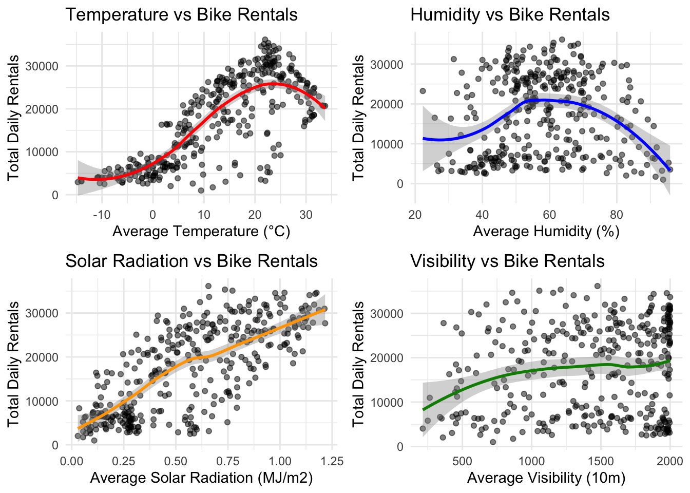

Rows: 8760 Columns: 14
── Column specification ────────────────────────────────────────────────────────
Delimiter: ","
chr (4): Date, Seasons, Holiday, Functioning Day
dbl (10): Rented Bike Count, Hour, Temperature(°C), Humidity(%), Wind speed ...
ℹ Use `spec()` to retrieve the full column specification for this data.
ℹ Specify the column types or set `show_col_types = FALSE` to quiet this message.
#Transform:#- dates to datetime formats#- snake_case vars# Clean and transform the datasoul_bikes_clean <- soul_bikes |>clean_names() |># This will convert "Functioning Day" to "functioning_day"mutate(date =dmy(date),seasons =as.factor(seasons),holiday =as.factor(holiday),functioning_day =as.factor(functioning_day) )# Check column names to verifynames(soul_bikes_clean)
# Individual scatter plots with trend linestemp_v_rentals <-ggplot(daily_summ, aes(x = avg_temp, y = total_bikes)) +geom_point(alpha =0.5) +geom_smooth(method ="loess", color ="red") +labs(title ="Temperature vs Bike Rentals",x ="Average Temperature (°C)",y ="Total Daily Rentals") +theme_minimal()humid_v_rentals <-ggplot(daily_summ, aes(x = avg_humidity, y = total_bikes)) +geom_point(alpha =0.5) +geom_smooth(method ="loess", color ="blue") +labs(title ="Humidity vs Bike Rentals",x ="Average Humidity (%)",y ="Total Daily Rentals") +theme_minimal()sun_v_rentals <-ggplot(daily_summ, aes(x = avg_solar_rad, y = total_bikes)) +geom_point(alpha =0.5) +geom_smooth(method ="loess", color ="orange") +labs(title ="Solar Radiation vs Bike Rentals",x ="Average Solar Radiation (MJ/m2)",y ="Total Daily Rentals") +theme_minimal()vis_v_rentals <-ggplot(daily_summ, aes(x = avg_visibility, y = total_bikes)) +geom_point(alpha =0.5) +geom_smooth(method ="loess", color ="green4") +labs(title ="Visibility vs Bike Rentals",x ="Average Visibility (10m)",y ="Total Daily Rentals") +theme_minimal()# Arrange plots in a gridgrid.arrange(temp_v_rentals, humid_v_rentals, sun_v_rentals, vis_v_rentals, ncol =2)
`geom_smooth()` using formula = 'y ~ x'
`geom_smooth()` using formula = 'y ~ x'
`geom_smooth()` using formula = 'y ~ x'
`geom_smooth()` using formula = 'y ~ x'

MLR
#Split the dataset.seed(123)bike_split <-initial_split(daily_summ,prop =0.75,strata = seasons)trn <-training(bike_split)tst <-testing(bike_split)folds <-vfold_cv(trn, v =10, strata = seasons)#Fitting MLR Models#Recipe 1recipe_1 <-recipe(total_bikes ~ ., data = trn) |>update_role(date, new_role ="ID") |># Extract day of week and create weekend factorstep_date(date, features ="dow") |>step_mutate(weekend =factor(if_else(date_dow %in%c("Sat", "Sun"), "weekend", "weekday"),levels =c("weekday", "weekend") # explicitly set levels ) ) |># Remove the intermediate date_dow variablestep_rm(date_dow) |># Standardize numeric variablesstep_normalize(all_numeric_predictors()) |># Create dummy variablesstep_dummy(all_nominal_predictors())recipe_1 |>prep() |>bake(new_data =NULL) |>glimpse()
# A tibble: 3 × 7
.metric .estimator mean n std_err .config model
<chr> <chr> <dbl> <int> <dbl> <chr> <chr>
1 rmse standard 2946. 10 236. Preprocessor1_Model1 Model 3
2 rmse standard 3460. 10 475. Preprocessor1_Model1 Model 2
3 rmse standard 4151. 10 150. Preprocessor1_Model1 Model 1
#Model 3 is best fit# Use last_fit with the best model (Model 3)final_fit <- workflow_3 |>last_fit(bike_split)# Get test set metricscollect_metrics(final_fit)
# A tibble: 2 × 4
.metric .estimator .estimate .config
<chr> <chr> <dbl> <chr>
1 rmse standard 2913. Preprocessor1_Model1
2 rsq standard 0.919 Preprocessor1_Model1
# Get coefficientsfinal_fit |>extract_fit_parsnip() |>tidy()